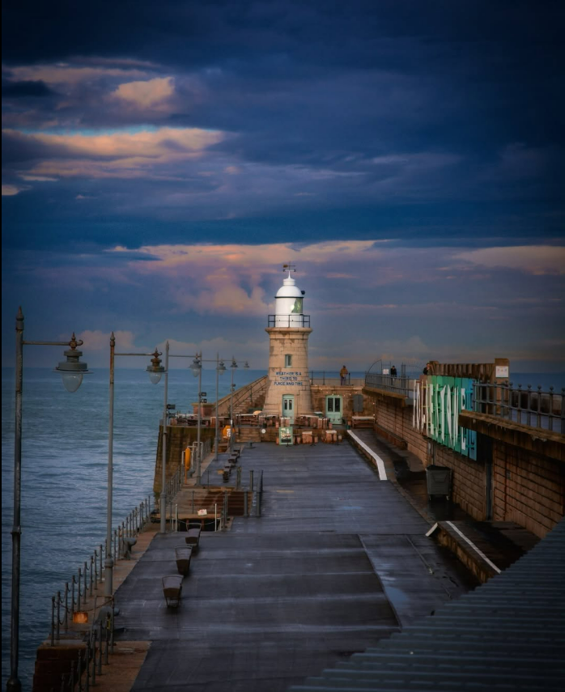
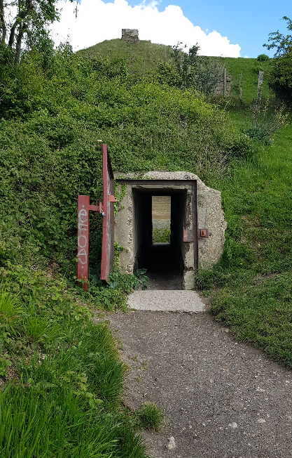
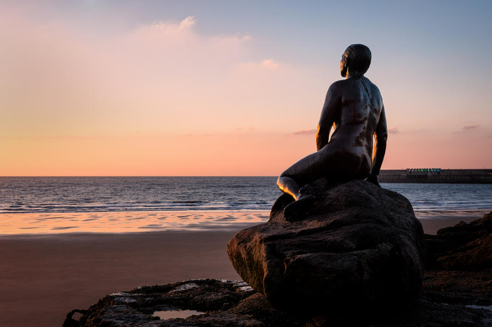

Log 故事集
《An Odyssey Walk》
Based on Awakened Walkers Club Trail 3 · 22/08/2026
“有一个’不可名状’的事物，它始于宇宙诞生之前，始于任何事物存在之前。它至今仍然存在于当下，存在于每个生命里。”——Rupert Spira
我是谁？
1. 灯塔

17:46 Folkestone Harbour
海水开始涨潮了。从伦敦来的一行人走到了灯塔的尽头，四处张望着，利用最后一丝力气问道：“在哪里？”
背后的海开始变暗，阴云将最后一点日光挤压在地平线上。突然，灯塔亮了起来。昏暗的黄色灯光下，映照出一个影子，仿佛一直在等着他们。
2. 堡垒

8个小时前，列车门“嘀”一声打开。从伦敦来的一行人下车。天气比想象中好，阳光充足，没有暴风。
一行人从Dover Priority出站，门口的出租车，红绿灯，沿街房屋映入眼帘。随着逐渐深入进入Dover城镇，Dover城堡逐渐进入视野，巍峨耸立在另一侧的山崖之上。
一条上升的阶梯，将这行人从城镇引入到了山林里。走着走着，一座巨大的堡垒呈现在眼前。里面分布着异常巨大的壕沟，部分壕沟有9米到15米深。这些壕沟用砖砌筑，两侧留着火炮和轻武器交叉射击的遗迹。
来到一个小逃生通道的洞口，一行人准备穿梭到另一头，只见另一头冒出一个男青年的面庞，他似乎穿着军装。青年对着洞口说道：“你们是谁？你们要去哪里？”
“我们想要从这里穿过去，到海边。” 一行人说道。
“你们快速离开壕沟，马上这里会变得危险。法国军队要攻打过来了，已经看见了对面法国的船舰往Dover港口驶来。虽然不知道你们是怎么进去的，但是请务必快速离开，为了你们的安全考虑，请离开后往西侧走，那里会更安全。‘’ 说罢，青年便离开了另一头的洞口。
当一行人穿过只有1.5米高的通道后，发现眼前空无一人，Dover的海港只有空寂，海面只有开阔与平静。
“他是谁？“ 一个人不禁问道。
“他看起来像一个士兵。”一个人回答道。
“他好像对我们的身份很疑惑，问了我们是谁？”一个人说道。
我们是谁？一行人看着背后的独立堡垒，若有所思地继续前行。
3. 悬崖


经过一段崎岖的下沉公路和一段平坦的村庄人行道，一行人通过一个地下通道，来到了西侧的Dover Cliff。一行人贴着悬崖边的小径一直往山顶攀升。通过树叶的间隙，可窥见白垩纪时期的石头，历经亿万年风力侵蚀，却仍如象牙般亮白纯净。
在离山顶不远处的树荫，一行人遇见了一位身着古着衣装的男子。
“中午好，女士们先生们。你们是谁？要往哪里去？” 男子用极其浓烈的英式口音礼貌地问道。
“您好先生，我们是旅人。想要寻找一座灯塔。请问您是？”行人回答道。
“噢，我是一名作家，不知为何，我的内心仿佛有一种指引，它将我引导到这里。我被眼前的悬崖景象所震惊，它让我内心平静但又充满灵感，仿佛生命本身要通过我表达出某些东西！”男子激动地继续说道，”当我站在悬崖边，发现自己此生一直都在试图找到一个答案。我到底是谁？我的使命是什么？我要成为什么？当海风吹过我的面颊时，我突然意识到，这些回答仍然是戏剧里新的角色，新的服装和新的台词。整个世界是一座舞台！“
“为你感到高兴，先生！希望你继续听从指引，我们得继续赶路了，刚刚我们从后面山上的堡垒来的时候，还发现了令人迷惑的现象，希望你一切顺利。”
“堡垒？我不知道这附近有堡垒。”男子疑惑了一下，继续说道：”好的，那也祝你们顺利，虽然不知道你们要找的灯塔在哪里，但是我相信你们会找到的，很高兴认识你们。“
一行人点头示意后，慢慢离开了男子，走到了山顶。
其中一人说道：“我们到Shakespeare Cliff了，据说莎士比亚曾经在这里创作过，所以才如此命名。“
“刚刚那个人好像……不太可能吧，今天遇见的怪事可真多。”一人说道。
就在一行人离开那名古着男子不久后，男子拿出了他的笔在草稿上写下：“King Lear……’’
4. 忏悔


一行人走进了一条隧道，隧道是一条下坡，黑暗几乎笼罩着隧道的全部，时有一股恶臭袭来。随着下坡的脚趾不断撞向鞋尖，很快一行人走出了隧道。身后巨大的白崖猛然升到头顶，像一道被放大到失去尺度的墙。然后，Samphire Hoe 出现在海与悬崖之间。
这是一片本不存在的土地，当年修建英吉利海峡隧道时，从地下挖出的白垩被送到这里，最后成为了土地。为了让一条通道出现而不得不被移走的东西，最终在另一个地方，成为了海岸。
Samphire Hoe是一片宁静的自然保护区。盐湖，坡草，池塘，野牛。仿佛是神居住的地方。
一行人经过几只野牛旁，遇见一个五六十岁但很有威严的老人。他主动为一行人带路，说道：“远方来的旅人，你们可切勿接近这些神牛，只因他们是不可触碰的，是神的家眷。’‘
“为何这些牛让您如此忌惮，长者？”一行人问道。
“我曾经尝试抵抗过命运，也尝试改变我部下的命运，但是我最终失去了他们所有人。”长者说道，“我一直在忏悔，已经有很长一段时间不知道我究竟是谁了？在我的模糊的印象里，时有城邦，宫殿和一位熟悉很久的女人出现；时有弓箭，盔甲和长矛；时有船桨，巨人和六身怪物。”老人停顿了一下，’‘我不知道我要去哪里，我不记得我从哪里来。我只记得我有部下，但是我无法保护他们的生命。我失去了一切身份，目的和意义。’‘
一行人被老人送到了海边。老人问道：“陌生旅人们，你们要去往何方？”
见老人没有任何威胁，一行人便回答道：“我们要寻找一座灯塔，那里藏着最大的财富。您说的经历仿佛像一部神话史诗，仿佛像那位20年无法回家的奥德修斯。”
老人听见名字后，仿佛内心被击中了一样，默默地沿着白崖离开海边。最后消失在视野里。
一行人便继续前行。
0ede287457d8c4a83d6aab47ba0b5c4d.jpg]
5. 观察者


一行人穿过了Samphire beach和Fossil beach，海水冲刷着沙滩边留下的鞋印。海草与螃蟹不断被海水冲刷到岸上。在开阔轻松的环境中，一行人渐入佳境，专注地留意于迈出的每一个步伐。耳边传来海水拍打礁石的声音，鼻子里闻到新鲜的海腥味。一行人似乎在与右侧的白崖和左侧的海岸进行某种古老的对话。渐渐地融成一体，没有分别。顿时空间生出，平静升起。
不远处，一座巍峨的瞭望塔Martello Tower观察到了这一行人。
这座瞭望塔是一个观察者，当平静的海面上有任何的异常发生，瞭望塔便能观察到。
一行人也观察到了Martello Tower，于是人塔彼此照应着对方的存在。
此刻，没有人冒出念头来，塔也没有，而是享受着作为观察者的喜悦，这是一种平和又富足的幸福。
这一次，一行人没有被问“我是谁？”的问题。
74c2d762-7117-4e90-a093-bb9384994c82.png]
6. 欲望

经过一段平和富足的行程后，一行人抵达Folkestone小镇。一只美人鱼突然从雕像里活了过来，遇见了他们。便问道：
“你们是来寻找灯塔里的宝藏吗？”
一行人的欲望被瞬间激起。
“请问你知道灯塔在哪里吗？”
美人鱼指了指海港的方向，只见一座灰白色的灯塔矗立在海港的最远处。
“你们必须知道自己是谁，才能够获得那个宝藏。”美人鱼说完便又变成了雕塑。
一行人很是疑惑，回顾一路走来，似乎一直碰见奇怪的事情，遇到奇怪的人。而且他们总是在问“我是谁“。如今，面对近在咫尺的终点，这个奇怪的问题已经容不得思考，一行人欲望的已经如火山喷发般涌现。他们快速向灯塔走去。于是，时间回到了开头。
17:46 Folkestone Harbour
海水开始涨潮了。从伦敦来的一行人走到了灯塔的尽头，四处张望着，利用最后一丝力气问道：“在哪里？“
背后的海开始变暗，阴云将最后一点日光挤压在地平线上。突然，灯塔亮了起来。昏暗的黄色灯光下，映照出一个影子，仿佛一直在等着他们。
一行人走向前，灯塔里站着一些人，他们也走近，一行人终于看清，是他们自己。灯塔里的是一面镜子。
一行人着急地相互问道：
“宝藏在哪里？”
“这里面是谁？“
“为什么这里面是我？”
“为什么是我？”
“我是谁？”
7. 觉醒

是我，当然是我。
只是玻璃反光而已。一行人几乎笑出来，走了一整天，最后等待他们的，竟然只是自己的倒影。这太普通了，普通到甚至有些令人失望。
可灯光就在这时转过来。
白光扫过玻璃。倒影消失的那一瞬间，一行人突然明白了。
我是谁？
我是自己的身体吗？我是自己的思想吗？
我是某种身份吗？我是某种名字或标签吗？
这个身体。这个名字。这些经历。
这些想法。这些伤痕。这些关系。
这些“我”精心保存下来的故事。
一路上，它们全都在变化。
身体会累。想法会来去。
身份可以失去。记忆会模糊。
关系会结束。过去甚至可以被重新理解。
它们全都能够被”我“看见。
而就在那一刻，一个极简单的问题出现：
如果我能够看见它，那它真的是那个“看见”的我吗？
海风吹过，没有声音回答。可某种东西突然安静下来。
一行人想起一路以来的经历。
“阳光很好。”我知道。
“坡度很高，我很累。”我知道。
“壕沟很深。”我知道。
“悬崖陡峭。”我知道。
“海面很平静。”我知道。
“海味很腥。”我知道。
“牛在吃草。”我知道。
“塔在那里。”我知道。
“沙滩上都是人群。”我知道。
“灯塔就在眼前。”我知道。
“我是谁？”我也知道。
所有东西一直来来去去，可有一个“不可名状”的事物，从Dover Priority到这里，一次都没有离开，每一刻都存在————
“知道这一切正在发生。”
8. 转变
一行人站在那里，第一次没有试图给“我”一个定义。也第一次感觉，这个问题不再需要答案。
灯塔再次转过来。玻璃里，那个熟悉的人重新出现。但这一次，没有立刻认出“我”。只是一个身体，一张脸。一个走了很远，头发被风吹乱，鞋上全是粘上泥的人。看着这些“我”，忽然笑了。
原来那个在终点等我的人，只是一路把我带到这里的人。
身后，海仍然不停地来，不停地去。美人鱼雕塑仍然在岸边；Martello Tower还在观察；牛依然在吃草；悬崖依旧落入海里；壕沟依然纵深。一切都没有改变。
可整条路忽然变了。
因为一行人终于意识到，真正的宝藏不是物质，甚至不是知识的获得。
而是从
“我是这些东西。”
转变到
“这些东西正在被我看见。”
9. 结束是开始
其中一人低头，摸到口袋里一块 Fossil Beach 捡来的石头。几千万年的时间，安静地躺在掌心。几十年以后，如果提出“我是谁”的这个人都不存在了，这个问题还有意义吗？
一行人看了一眼灯塔，转身准备离开，向 Folkestone 的灯火走去。
走出几步后，身后的灯塔再次旋转。一道光越过海面，越过港口，最后从这行人的身上一扫而过。
他们没有回头。
因为就在那一刻，他们脑中一直吵闹的声音，第一次彻底安静了。
他们走了一整天，想要找到灯塔里的宝藏。最后找到的是他们自己，是他们的“我”，但是“我“是谁。直到路的尽头才发现——凡是我能够找到的，都不是我。
而那个真正等待我的“人”，也从未站在终点。
而是从第一步开始，
祂就一直在。